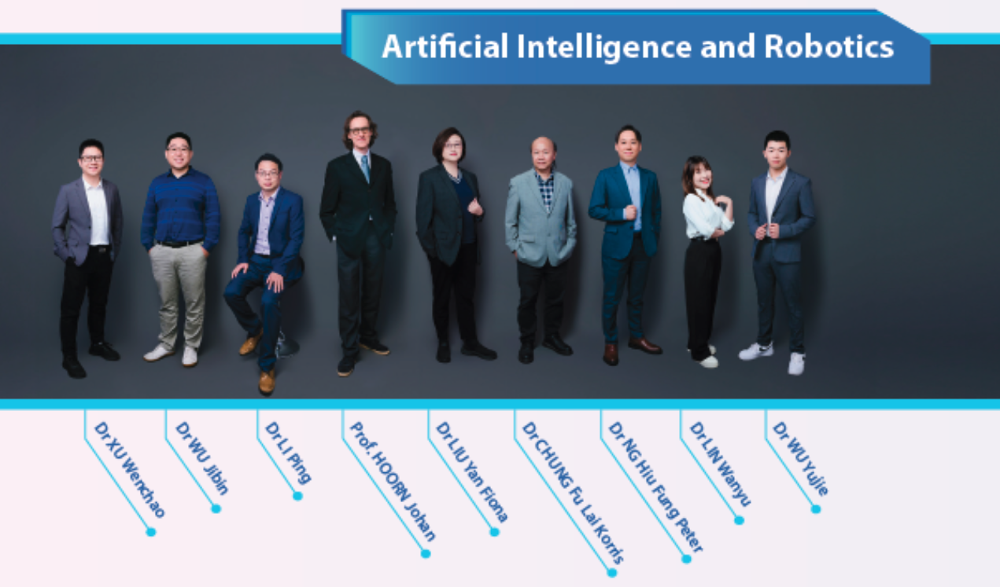

Dr. Liu Yan
Language
Informations
Education
Recrutment 🎉🎉🎉
Three projects are recruiting PostDoc, research PhD, research associate, research assistant. The details can be found here.
- EEG Analysis (2-3 PostDoc, 2-3 research PhD, 1 research assistant)
- Computer Music (1-2 PostDoc, 1-2 research PhD, 1 research associate)
- Medical Speech Interaction System (1 PostDoc, 1 research associate, 2-3 research assistant)
Research Interests
Group Leader of Artificial Intelligence and Robotics
The research group of Artificial Intelligence and Robotics brings together the collective efforts from diverse areas of expertise to deliver high impact research. Starting from the research foundations of learning theory and control theory, our group has 9 group members and works on various kinds of machine learning models, such as deep learning and transfer learning models, and applies these in the design of robots. Moreover, our group works on social robotics, affective computing, and artificial creativity as well.
Director of Cognitive Computing Lab
Cognitive computing includes theoretical study, real world problem solving, and system implementation that arise from, relate to, or deliberately influence human’s cognition system and procedure. Cognitive computing has two complementary faces: Discover the secrets of human brain by exploring information technologies; Investigate novel computational models and systems by referencing brain structure and mind process.
Selective Publication
Artificial Intelligence in Computer Vision
-
Yu, X., Liu, Y., Chan, K. C., & Chen, C. W.
EGCN++: A New Fusion Strategy for Ensemble Learning in Skeleton-Based Rehabilitation Exercise Assessment
IEEE Transactions on Pattern Analysis and Machine Intelligence (2024)
IF: 24.314
-
Yu, X., Zhang, Z., Liu, Y., Zhong, S.-H., Liu, Y., & Chen, C. W.
Gla-gcn: Global-local adaptive graph convolutional network for 3d human pose estimation from monocular video
Proceedings of the IEEE/CVF International Conference on Computer Vision (2023)
A level, CCF
-
Bruce X.B. Yu, Zhi Zhang, Yongxu Liu, Sheng-hua Zhong, Yan Liu, Chang Wen Chen
GLAGCN: Global-local Adaptive Graph Convolutional Network for 3D Human Pose Estimation from Monocular Video
International Conference on Computer Vision ICCV (2023)
A level, CCF
-
Bruce X.B. Yu, Yan Liu, Xiang Zhang, Keith C.C. Chan
MMNet: A Model-based Multimodal Network for Human Action Recognition in RGB-D Videos
IEEE Transactions on Pattern Analysis and Machine Intelligence (TPAMI), vol 45, no. 3 (2023)
IF: 24.314
-
Bruce X.B. Yu, Yan Liu, Xiang Zhang, Gong Chen, Keith C.C. Chan
EGCN: An Ensemble-based Learning Framework for Exploring Effective Skeleton-based Rehabilitation Exercise Assessment
Proceedings of the International Joint Conference on Artificial Intelligence (2022)
A level, CCF
-
Zhi Zhang, Mingjie Zheng, Sheng-hua Zhong, and Yan Liu
Steganographer detection via a similarity accumulation graph convolutional network
Neural Networks 136 (2021)
IF: 9.657
-
Bruce X.B. Yu, Yan Liu, Keith CC Chan, Qintai Yang, and Xiaoying Wang
Skeleton-based human action evaluation using graph convolutional network for monitoring Alzheimer's progression
Pattern Recognition 119 (2021)
IF: 8.518
-
Bruce X.B. Yu, Yan Liu, and Keith CC Chan
Multimodal fusion via teacher-student network for indoor action recognition
Proceedings of the AAAI Conference on Artificial Intelligence, vol. 35, no. 4 (2021)
A level, CCF
-
Jiaxin Wu, Sheng-hua Zhong, and Yan Liu
Dynamic graph convolutional network for multi-video summarization
Pattern Recognition 107 (2020)
IF: 8.518
Artificial Intelligence in Music
-
Hu, Z., Liu, Y., Chen, G., Ma, X., Zhong, S.-H, & Luo, Q.
Responding to the Call: Exploring Automatic Music Composition Using a Knowledge-Enhanced Model
Proceedings of the AAAI Conference on Artificial Intelligence (2024)
A level, CCF
-
Hu, Z., Ma, X., Liu, Y., Chen, G., Liu, Y., & Dannenberg, R. B.
The beauty of repetition: An algorithmic composition model with motif-level repetition generator and outline-to-music generator in symbolic music generation
IEEE Transactions on Multimedia (2023)
IF: 8.182
-
Hu, Z., Ma, X., Liu, Y., Chen, G., & Liu, Y.
The Beauty of Repetition in Machine Composition Scenarios
Proceedings of the 30th ACM International Conference on Multimedia (2022)
A level, CCF
-
Hu, Z., Liu, Y., Chen, G., & Liu, Y.
Can Machines Generate Personalized Music A Hybrid Favorite-aware Method for User Preference Music Transfer
IEEE Transactions on Multimedia (2022)
IF: 8.182
-
Hu, Z., Liu, Y., Chen, G., Zhong, S.-H., & Zhang, A.
Make your favorite music curative: Music style transfer for anxiety reduction
Proceedings of the 28th ACM International Conference on Multimedia (2020)
A level, CCF
Artificial Intelligence in Electroencephalography
-
Zhang, Z., Zhong, S.-H, & Liu, Y.
Beyond mimicking under-represented emotions: Deep data augmentation with emotional subspace constraints for EEG-based emotion recognition
Proceedings of the AAAI Conference on Artificial Intelligence (2024)
A level, CCF
-
Robin Shao, Idy S. C. Man, Suk-Yu Yau, Cheng Li, Pinky Y. P. Li, Wai Kai Hou, Shirley Xin Li, Yan Liu, Yun Kwok Wing, and Tatia M. C. Lee
The interplay of acute cortisol response and trait affectivity in associating with stress resilience
Nature Mental Health (2023)
Nature Series Journal
-
Zhi Zhang, Sheng-hua Zhong, and Yan Liu
GANSER: A Self-supervised Data Augmentation Framework for EEG-based Emotion Recognition
IEEE Transactions on Affective Computing (2022)
IF: 13.99
Artificial Intelligence in Other Fields
-
Liu, Y., Liu, Y., Yu, B. X. B., Zhong, S.-H., & Hu, Z.
Noise-robust oversampling for imbalanced data classification
Pattern Recognition 133, January 2023: 109008
IF: 8.518
-
Zhang, X., Yu, B. X. B., Chen, G., Liu, Y., Ng, G. W.-Y., Chia, N.-H., So, E. H.-K., So, S.-S., & Cheung, V. K.-L.
Conversational System For Clinical Communication Training Supporting User-defined Tasks
IEEE International Conference on Teaching, Assessment, and Learning for Engineering (TALE), Dec. 4- Dec. 7, 2022
Best Paper Award
Details of Recrutment
Postdoctoral Researcher, Music Generation Direction
Requirements:
- PhD in Science or Engineering, graduated from a university ranked in the world's top 100 for the specific major
- Knowledge of music theory
- Strong programming skills
- Foundation in artificial intelligence
Postdoctoral Researcher, EEG Data Analysis Direction
Requirements:
- PhD in Science or Engineering, graduated from a university ranked in the world's top 100 for the specific major
- Strong programming skills
- First author of 3 or more top conference/journal papers
Postdoctoral Researcher, Medical Speech Dialogue System Direction
Requirements:
- PhD in Science or Engineering, graduated from a university ranked in the world's top 100 for the specific major
- Strong programming skills
- Specialization in speech recognition and generation
- Fluent in Cantonese/Mandarin/English
PhD Student, Music Generation Direction
Requirements:
- Bachelor's degree from 985 universities/overseas universities ranked in top 200/first author of top conference or journal paper
- English proficiency meeting PolyU admission requirements
- Knowledge of music theory
- Strong programming skills
- Foundation in artificial intelligence
PhD Student, EEG Data Analysis Direction
Requirements:
- Bachelor's degree from 985 universities/overseas universities ranked in top 200/first author of top conference or journal paper
- English proficiency meeting PolyU admission requirements
- Strong mathematics background
- Strong programming skills
- Foundation in artificial intelligence
Research Associate, Music Generation Direction
Requirements:
- Master's degree or over three years of work experience
- Knowledge of music theory
- Familiar with computer music-related software or tools
- Strong programming skills
Research Assistant, Medical Speech Dialogue System Direction
Requirements:
- Strong programming skills
- Familiar with speech-related software or tools
- Fluent in Cantonese/Mandarin/English
Guideline of Recrutment
If you are interested in, please send email to yan.liu@polyu.edu.hk before Nov. 15, 2024.
- Use a subject line format: Application for [POSITION] from [YOUR NAME]. Example: Application for Postdoctoral Researcher, Music Generation Direction from ZHANG San.
- Attach your CV/Resume including: GPA/ranking, TOEFL/IELTS/GRE scores, Publications/research experience, Awards